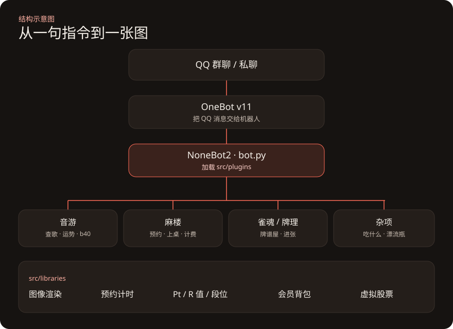
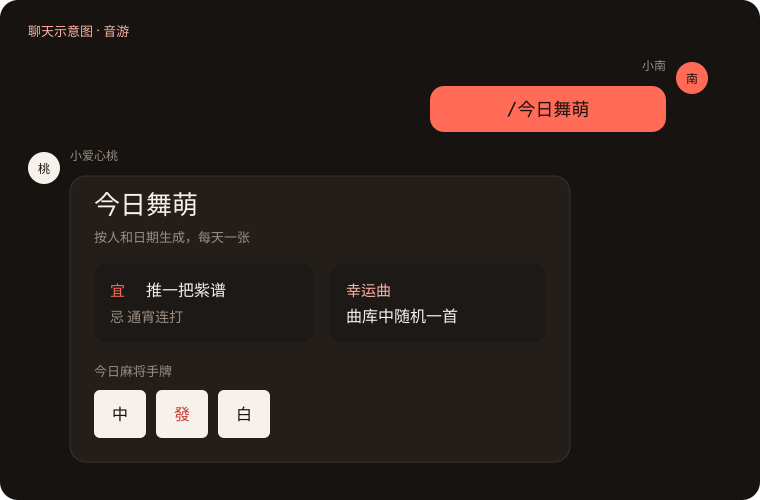
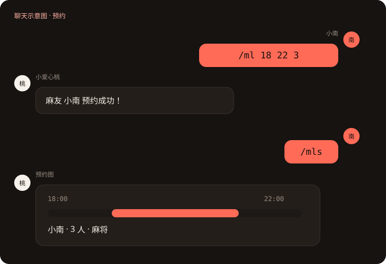
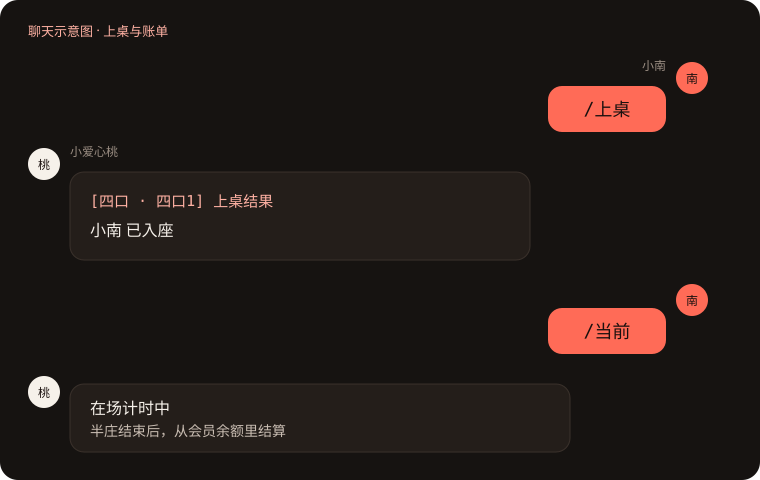
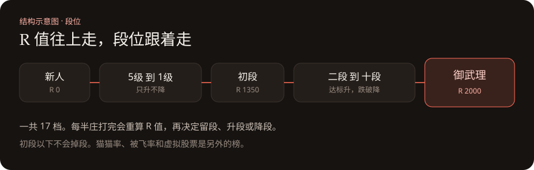

麻楼人一多，约时间、看谁在桌上、半庄打完怎么算钱，全靠群里一句一句喊会乱。malou-bot 就是为这件事长出来的。它跑在 QQ 上，底子是 NoneBot2，音游查歌那部分从 Diving-fish 的 mai-bot 改过来，麻楼自己的预约、计费和段位是后加的。

查一首歌，看今天手气
群里最常用的还是舞萌。/今日舞萌 按人和日期出一张卡片：宜什么、忌什么、一首幸运曲，再配一副当天的麻将手牌。想指定难度，就用 /随个紫14 这种说法。查谱面是 /紫id11451，打到某个分数还允许多少失误，用 /分数线。
绑定查分器之后，可以出 b40、b50，也能看六维底力。中二、音击、Arcaea、Phigros、旋转音律也各有一张成绩卡。谱面笔记记在 /maino 里，谁都可以往上补一句。

先预约，到了再上桌
麻将和音游的预约是两条指令。/ml 18 22 3 表示 18 点到 22 点、3 个人来打麻将；/ml 包夜 是过夜。音游用 /mlw，规则差不多，只是不接受包桌。约完用 /mls 看图。人数和时间写错了，它会把格式说清楚，不会默默记错。
人到了店里，/入场 只是进门。/上桌 才会坐到四口机上，也可以点名机台，或一次带上最多四个人。/下桌 离开桌子，人还算在店里。/当前 看这场计时，/退场 才离店结算。半庄的账从会员余额里扣。


打完还有段位
每半庄记一笔 Pt。R 值跟着对局变，段位再跟着 R 值走，从新人、各级，到初段、十段，最高是御武理。初段以下只升不降，再往上，跌破门槛就会降段。另外能看猫猫率、被飞率、最近十场，也能把牌手当成股票，用 Pt 买卖。
雀魂牌谱屋和天凤牌理是旁边的工具：丢一个雀魂昵称，或一串 123m456p789s 这样的手牌，它给出战绩或进张。

帮别人决定吃什么、扔一只漂流瓶，这些也在。/help 会把常用指令画成一张图。更细的麻楼菜单在 /ml。
作品页上有一份更短的说明：malou-bot。